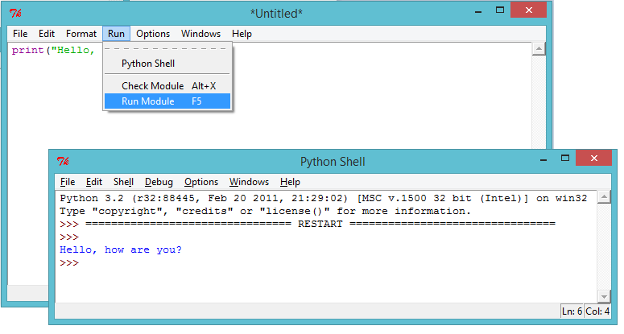
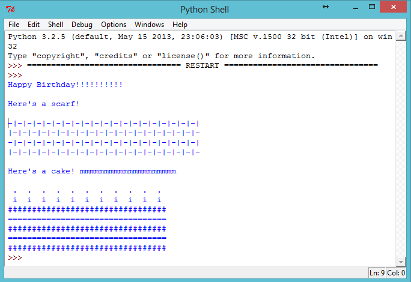

Intro:
Pythonilla voit muuttaa sarjan komentoja hyödyllisiksi ohjelmiksi ja hauskoiksi peleiksi! Näiden tehtävien aikana opit ajamaan Python-ohjelman, joka kirjoittaa näytölle tekstiä.
1. askel: Tervehtiminen
Tehtävälista
Aloitetaan kirjoittamalla hyvin yksinkertainen ohjelma, jotta opit, miten Python-ohjelma saadaan käyntiin. Avaa IDLE-editori.
- Jos käytät Windowsia, löydät IDLEn käynnistysvalikosta;
- Jos olet Mac-tietokoneella, avaa Terminal.app, kirjoita
idleja paina enter; - Linuxilla löydät IDLEn avaamalla Terminal-ikkunan, kirjoittamalla
idleja painamalla enteriä;
Klikkaa
File → New Windowja kirjoita seuraava teksti avautuneeseen ikkunaan:
print("Hello, how are you?")Tämä ohjelma tulostaa tietokoneen näytölle tekstiä. Huomaa, että teksti, jonka haluat näkyvän näytöllä, on rajattu lainausmerkeillä("). Tämä kuva näyttää, mitä sinun tulee tehdä:

- Tallenna tiedosto klikkaamalla
File → Saveja anna sille nimeksi vaikkapahello.pytai jokin muu vastaava nimi. Nimen pitää loppua.py, jotta tietokone ymmärtää, että kyseessä on Python-kielellä kirjoitettu tiedosto. Ilman tätä liitettä ohjelmassasi ei näy väritunnisteita, joista voi olla paljon apua.

- Aja ohjelma valitsemalla
Run → Run Module. Toisen ikkunan tulisi nyt avautua. Uusi ikkuna on Python-komentorivi, jossa ohjelmasi voidaan ajaa. Jos kaikki on toiminut kuten pitikin, näet nyt tekstisi tulostettuna näytölle.

- Jos olen tehnyt jonkin virheen, esimerkiksi unohtanut lainausmerkin (
"), saat sen sijaan virheilmoituksen, joka kertoo sinulle, mitä meni pieleen. Kokeile saada virheilmoitus!

- Onneksi olkoon, olet nyt virallisesti Python-ohjelmoija! Voit taputtaa itseäsi olalle (tai jos sinua laiskottaa, pyydä jotakuta muuta tekemään se).
Tallenna projektisi
Haaste: Mitä mietit?
Muuta edellinen ohjelma kirjoittamaan näytölle jotakin mielenkiintoisempaa!
Jos haluat käyttää ä- ja ö-kirjaimia, sinun tulee lisätä ohjelmasi alkuun seuraava rivi:
# -*- coding: utf-8 -*-Aloita tällä rivillä jokainen ohjelmasi, jossa haluat käyttää ä:tä tai ö:tä, koska ne eivät kuulu Pythonin vakiomerkistöön.

Tallenna projektisi
2. askel: Esittele itsesi
Tehtävälista
- Tulostetaanpa näytölle jotakin paljon hauskempaa kuin tekstiä… ASCII-taidetta! ASCII-taide on kuvien luomista tekstillä. Tässä on esimerkki - se esittää koiraa!

Tehdäksesi itse tämän mestariteoksen, kirjoita seuraava IDLE-editoriin ja aja ohjelmasi:
print("Kuva koirasta...")
print(" 0____ ")
print(" |||| ")- Voit myös halutessasi käyttää kolmea heittomerkkiä (
''') lainausmerkkien sijasta, jolloin voit tulostaa useampia rivejä tekstiä yhdellä print-komennolla. Näin:
print('''
Kuva koirasta...
0____
||||
''')Kun ajat tämän ohjelman, näet saman koiran kuin edelliselläkin ohjelmalla.
Tallenna projektisi
Haaste: Esittele itsesi
Kirjoita Python-ohjelma, joka kertoo jotain sinusta, käyttäen tekstiä ja ASCII-taidetta. Voit luoda kuvia harrastuksistasi, kavereistasi, perheestäsi… mistä vain haluat! Tässä esimerkki:

Tallenna projektisi
3. askel: Tekstin laskemista
Tehtävälista
- Python osaa myös tehdä laskutoimituksia tekstillä! Mitä saadaan, jos
"hello"kerrotaan viidellä? Kysytään Pythonilta, ajamalla tämä ohjelma:
print("hello" * 5)Tähti (*) ohjelmassa on kertolaskun merkki. Kun ajat ylläolevan ohjelman, sinun tulisi nähdä vastaus:

- Voit tehdä edellisestä tekstistä helpommin luettavaa, jos lisäät välilyönnin sanan
"hello"jälkeen ohjelmassasi:
print("hello " * 5)Ajamalla tämän ohjelman näet, että sen tulostetta on vähän helpompaa lukea kuin aiemmin.
- Jos
"hello "kertaa 5 on"hello hello hello hello hello ", niin mitä sitten on"hello" - 7? Onko tässä laskutoimituksessa mitään järkeä?

Hupsista, se meni rikki! Vastauksen sijasta saimme virheilmoituksen. Näyttää siltä ettei tuossa laskussa ole järkeä Pythonilla.
- Entä sitten yhdyslasku? Mitä luulet
"hello " + "world"in tulostavan? Kokeile sitä itse ajamalla seuraava ohjelma:
print("hello " + "world")
Antaako se odottamasi vastauksen?
Tallenna projektisi
Haaste: Sanoja ja numeroita
Mitä tämä ohjelma kirjoittaa näytölle? Kokeile, pystytkö arvaamaan lopputuloksen, ennen kuin ajat ohjelman.
print("ha "*4)
print("mi" + "ta"*2)
print("Hei kai" + "k"*2 + "i" + "!"*10)Osaatko tehdä omia sanojasi?
Tallenna projektisi
4. askel: ASCII-kuvioita
Tehtävälista
- Nyt osaat tehdä laskutoimituksia tekstillä, entä sitten? Onko siitä mitään hyötyä? No, sanotaan että haluaisit piirtää ASCII-suorakulmion joka on 30 merkkiä leveä ja kolme merkkiä korkea. Voisit joko tehdä sen hankalalla tavalla:
print("##############################")
print("##############################")
print("##############################")tai voisit säästää aikaa ja piirtää sen helpommalla tavalla, näin:
print("#" * 30)
print("#" * 30)
print("#" * 30)Molemmat piirtävät täsmälleen samanlaisen suorakulmion näytölle.

- Voit tehdä laskutoimituksia käyttämällä jopa mielenkiintoisia kuvioita, kuten tämän aallon:
print("/\ "*10)
print(" \/"*10)
Tallenna projektisi
Haaste: Koodaa huivi
Parhaalla ystävälläsi on 11-vuotissyntymäpäivä, ja olet päättänyt antaa hänelle lahjaksi huivin! Suunnittele huiviin omanlainen kuviosi käyttämällä laskutoimituksia hyväksi mahdollisimman paljon.
Jos olet anteliaalla tuulella, voit jopa koodata hänelle syntymäpäiväkakun, jossa on 11 kynttilää!
